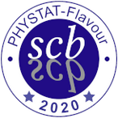
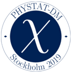
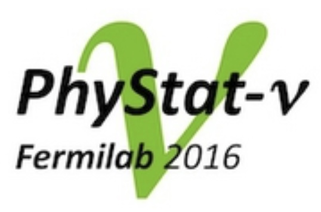
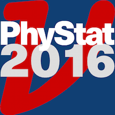
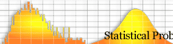

PHYSTAT Workshops and Schools
Future events:
- PHYSTAT- Statistics meets ML- VERaIPHY: (NIKHEF, Amsterdam) 2nd PHYSTAT Topical Meeting on "Statistics meets ML" 16-17 Feb 2026
Links to past events:
- 1st PHYSTAT School: (Nooitgedacht, Netherlands) 1st PHYSTAT School "Statistics in the era of ML", 17-21 Nov 2025
- PHYSTAT-PDF4LHC: (CERN) "Workshop: PDF4LHC with PHYSTAT", 6-7 Oct 2025
- PHYSTAT 25: PHYSTAT 25 Anniversary Symposium, 16 Jan 2025, 13:00-18:00 CERN time
- Statistics Meets ML: UK-Imperial PHYSTAT Conference on the interface of Statistics and Machine Learning in Particle Physics and Astrophysics, 9-12 Sep 2024
- UNFOLDING: France-Berkeley PHYSTAT Conference on Unfolding, 10-13 June 2024
- PHYSTAT-SBI: Simulation Based Inference in Fundamental Physics, 15-17 May 2024
- PHYSTAT-2sample: for 2 sample and GOF tests, 1-2 June 2023
- BIRS workshop (23w5096) (Banff): "Systematic Effects and Nuisance Parameters in Particle Physics Data Analyses", 23-28 Apr 2023
- PHYSTAT- Gamma 2022: High Energy Gamma Ray Astronomy in a Multi-Wavelength Context, 27-30 Sep 2022
- PHYSTAT-Anomalies 2022: Model-independent searches for New Physics, 24th and 25th May 2022
- PHYSTAT-Systematics workshop 2021 1-3 Nov + 10 Nov 2021
- PHYSTAT-FLAVOUR 2020 virtual workshop 19-21 Oct 2020 
- PHYSTAT-DM 2019 (Stockholm University) Jul 31 - Aug 2, 2019 "Statistical Issues in direct-detection Dark Matter search experiments" 
- PHYSTAT-nu 2019 (CERN) Jan 22-25 Logo_2019_bleu_SMALL.png
- PHYSTAT-nu 2016 (FNAL) 
- PHYSTAT-nu 2016 (Kavli, Japan) 
- PHYSTAT 2011 (CERN) Link to proceedings "Statistical issues related to discovery claims in search experiments, concentrating on those at the LHC, + Unfolding workshop"
- BIRS workshop (10w5068) (Banff): "Statistical issues relevant to significance of discovery claims ", 11-16 Jul 2010
- PHYSTAT 2007 (CERN) Link to proceedings "Statistical issues for LHC physics."
- BIRS workshop (06w5054) (Banff): "Statistical inference Problems in High Energy Physics and Astronmomy", 15-20 Jul 2006
- PHYSTAT 2005 (Oxford) "Statistical Problems in Particle Physics, Astrophysics and Cosmology"
- PHYSTAT 2003 (SLAC) "Statistical Problems in Particle Physics, Astrophysics and Cosmology" 
- PHYSTAT 2002 (Durham) "Advanced statistical analysis techniques as used in measurements and searches in Particle Physics, including Astroparticle Physics". Link to the agenda and materials
- Workshop on Confidence Limits 2000 (FNAL)
- 1st Workshop on Confidence Limits 2000 (proceedings) (CERN)